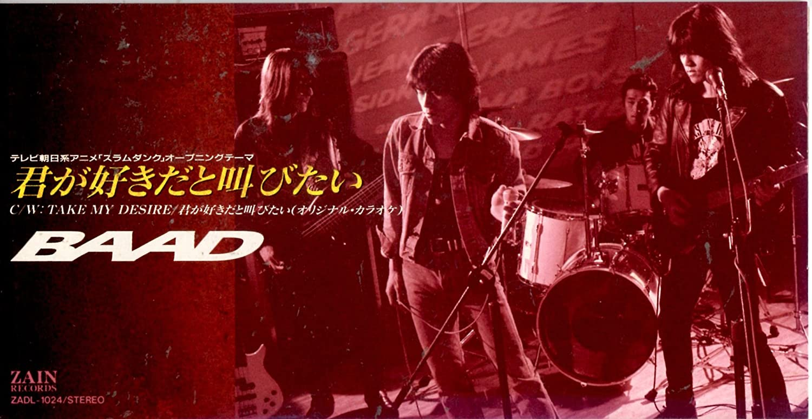
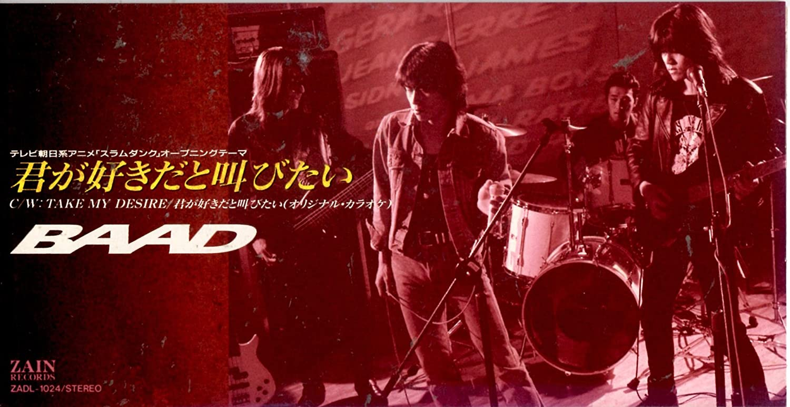

君が好きだと叫びたい

楽曲紹介
- 歌手名
- BAAD
- 作詞
- BAAD
- 作曲
- BAAD
"世界が終わるまでは 離れる事もない
そう願っていた 幾千の夜と"
第１期オープニングテーマに起用された。BAAD最大のヒット曲。
アニメの次回予告ではこの曲のインストが使われ、オープニングテーマ曲が第２期になっても使用された。


"世界が終わるまでは 離れる事もない
そう願っていた 幾千の夜と"
第１期オープニングテーマに起用された。BAAD最大のヒット曲。
アニメの次回予告ではこの曲のインストが使われ、オープニングテーマ曲が第２期になっても使用された。